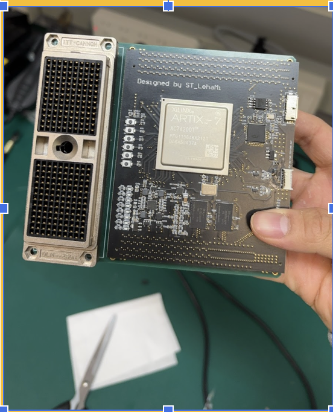
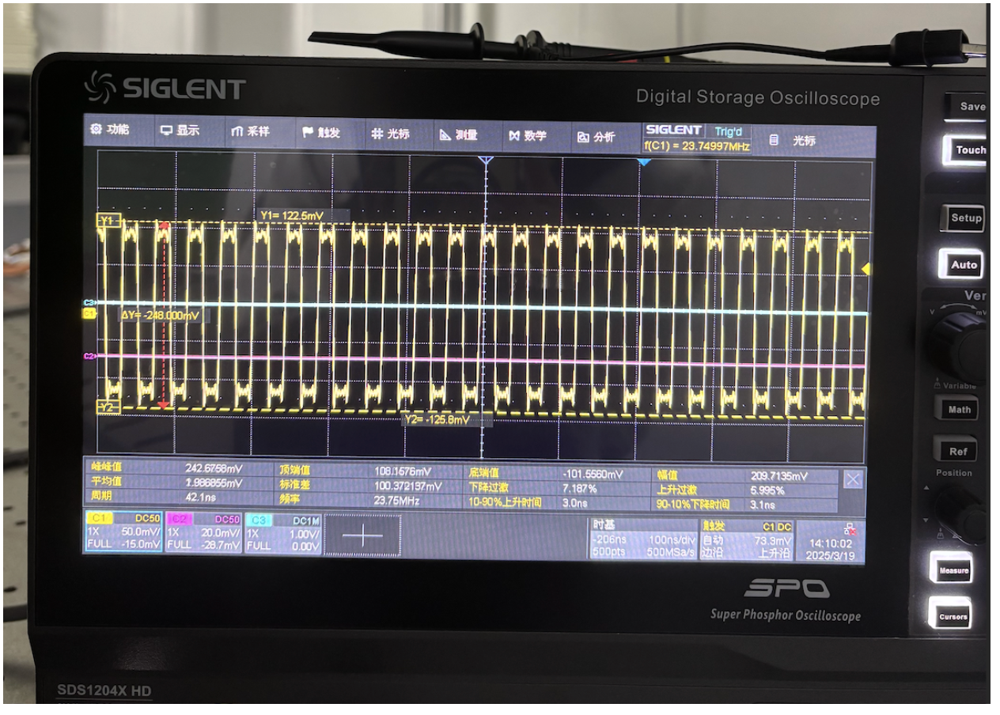
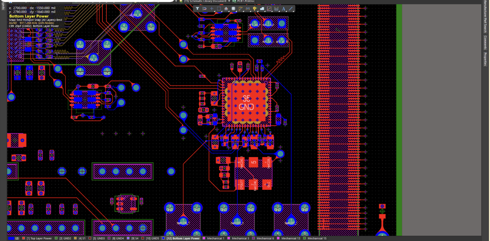
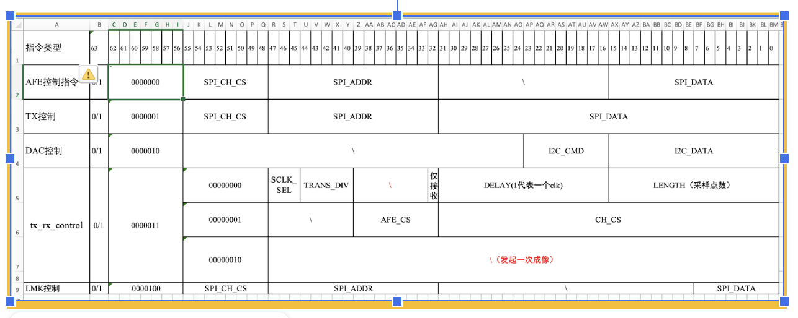
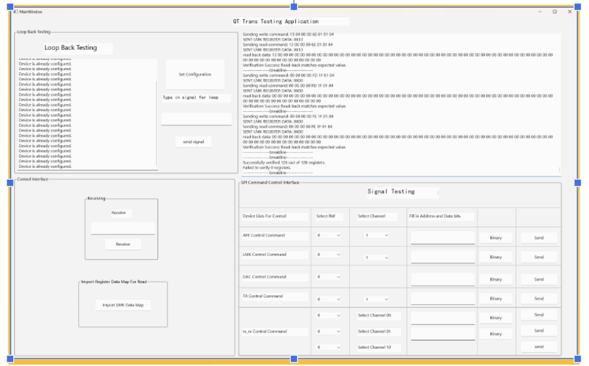
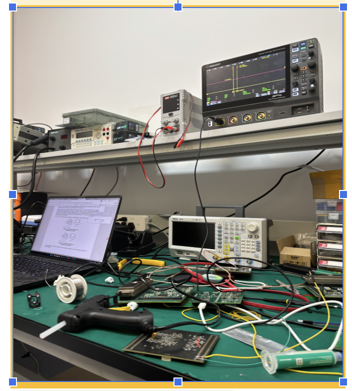
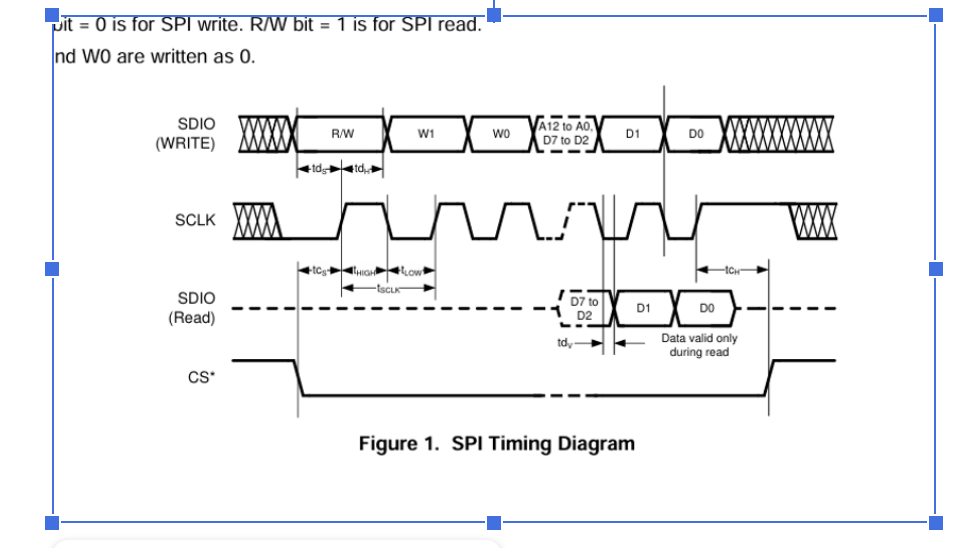
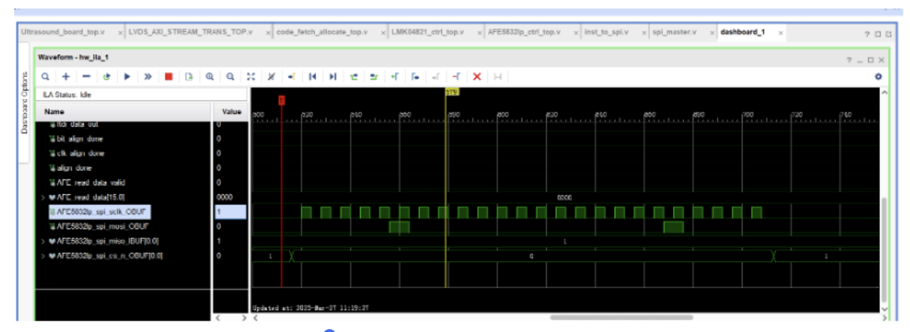

Project Overview
The objective of this project was to engineer a highly compact, portable diagnostic ultrasound transceiver. Ultrasound systems inherently require a complex mixed-signal environment: they must generate high-voltage, high-frequency excitation pulses to drive piezoelectric transducers, while simultaneously capturing microvolt-level return echoes with extreme precision. My role focused on designing the full signal chain, ensuring ultra-low noise performance and reliable digital data capture.

Hardware Architecture
The core architecture was built around two primary front-end components. For the transmit (TX) path, I integrated the TX7332 high-voltage pulser, which is responsible for generating the active high-voltage bursts that stimulate the ultrasound probe. For the receive (RX) path, I utilized the AFE5832LP Analog Front-End. This chip handles the Low Noise Amplification (LNA), Time-Gain Control (TGC), and Analog-to-Digital Conversion (ADC) of the delicate return echoes.
To orchestrate the timing between the high-voltage transmission and the precision ADC sampling, I implemented a custom clocking tree using the LMK04821 Jitter Cleaner. By supplying a highly stable, low-phase-noise differential clock to the AFE, I ensured maximum Signal-to-Noise Ratio (SNR) during the digitization phase.
Challenges & Solutions
Challenge: Mixed-Signal Cross-Talk and Clock Jitter. Routing high-voltage, fast-switching transmit signals alongside highly sensitive analog receive traces on a compact PCB introduces severe risks of capacitive coupling and cross-talk. Additionally, any jitter on the ADC clock directly degrades the imaging resolution.
Solution: Advanced PCB Layout Techniques. I designed a multi-layer stackup that physically isolated the TX and RX domains. I utilized internal ground planes to shield the AFE5832LP's analog inputs from the TX7332's high-current switching paths. For the LMK04821, I routed the sampling clocks strictly as length-matched differential pairs (LVDS/LVPECL) to reject common-mode noise, maintaining strict impedance control from the jitter cleaner directly to the ADC input pins.


Challenge: Testing Communication Protocols Highspeed chips requires fast communication protocols for data integrity and efficiency. There are slight variances interms of how protocols work and we need to identify them and use them.
Solution: SPI and I2C protocol with FIFO and FTDI USB transfer For this, all our chips being used utilizes SPI protocols for fast data transfer of the data. I created an excel sheet, outlining every single bit of the spi protocols of these chips, in terms of bit location, functionality, and control. Then I developed a QT C++ based Application software for real time register testing of these protocols.


We also did testing of the signals for signal integrity:

Challenges & Solutions
Challenge: Debugging and firmware testing of SPI modules based on Verilog
sometimes the underlying issues with correct register write and read operations requires debugging of the modules based on Verilog and Vivado. there was an issue with spi protocol before and we did debugging using qt application but the issue isn't a correct bit format write or read. but the module in vivado had a problem
Solution: module debug.
I looked through datasheet and found out that we intepreted the data format wrong and thus the module incorrectly define the way data bits are written, we looked back to the module and did the fixing using logic analyzer

